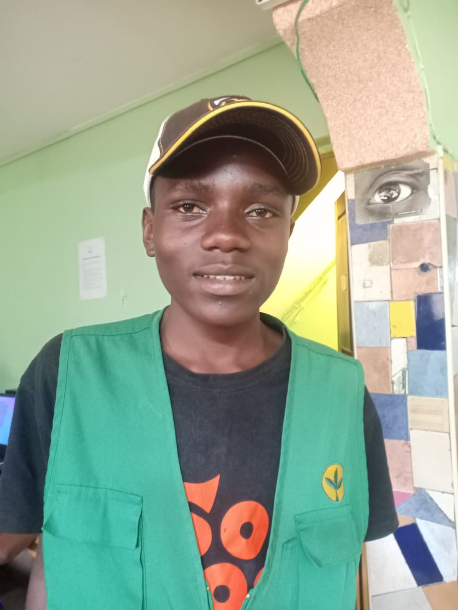

I Rodney loves dejaaying.life of a DJ seems fantastic. They travel around the world, sipping Champagne on private jets, then crack their knuckles and take their post behind a motherboard of buttons that sends trance-inducing beats bursting out of speakers the size of a Honda, while confetti shoots out from cannons, dancers fall from the sky, and lasers shoot across a dance floor. Afterward, they party with celebrities until the sun comes up. If it feels like a fantasy, it’s because it is one
Justus loves football.Nairobi — Football Kenya Federation (FKF) CEO Otieno has appealed to the media and other stakeholders in the football industry to help resurrect the game by attracting more sponsors and partners on board. Otieno admitted that the task of rescuing Kenyan football from the rumble cannot be achieved by the federation alone rather requires concerted efforts by every one in the sector. "Of course, negotiations are ongoing with other partners to ensure that FKF assets bring commercial value. As we have mentioned numerous times before, the federation cannot do this alone...we need your support, the media," Otieno said.